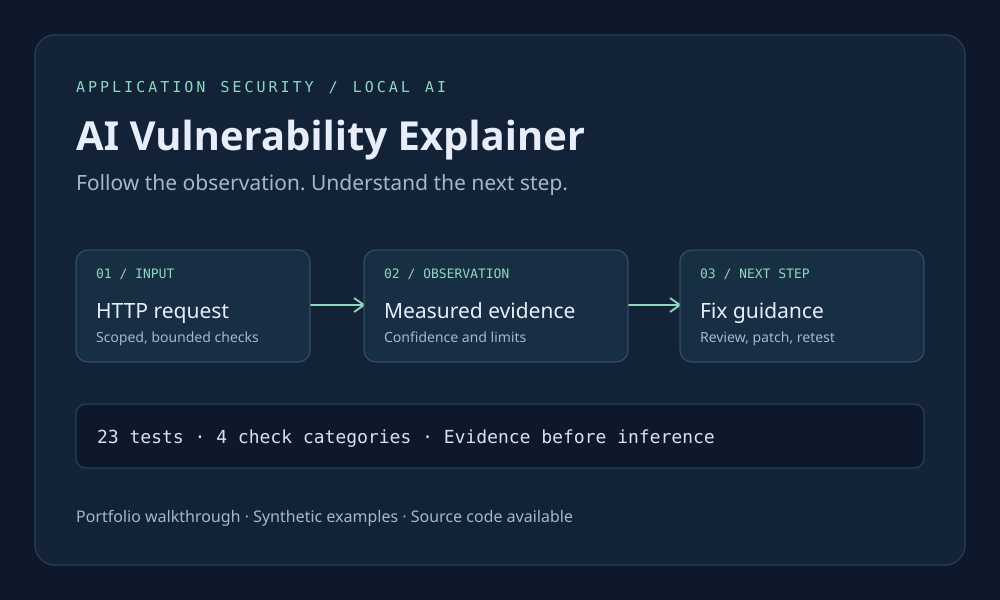

Observe first
The scanner owns the findings. It records baseline/control comparisons, repeated diagnostic observations, header checks, and cookie attributes.
A finding needs more than a label. It needs evidence, an honest explanation, and a clear next step.
I built a Python assessment workspace that connects bounded web security checks to local AI explanations, reference remediation, and retest comparisons.

A scanner result can be easy to misunderstand. A database error is not automatically proof of SQL injection, and reflected input is not automatically executable XSS. I designed this project to preserve those distinctions while making the next remediation step easier to understand.
The scanner owns the findings. It records baseline/control comparisons, repeated diagnostic observations, header checks, and cookie attributes.
A local Ollama model prioritizes a fixed check catalog and generates separate explanations from structured evidence. It cannot widen scope or change a finding into a proven exploit.
Reference fixes, illustrative code, exports, and same-endpoint comparisons help a reviewer track what changed. “Not observed” is kept distinct from independently verified remediation.
Both examples were generated by exercising the real fixture response handler through an in-memory transport. The fixture simulates diagnostics and executes no SQL. Different fixture paths are examples, not a same-endpoint patch verification.
Explicit hostname allowlisting, a pinned origin and resolved address, TLS verification, response-size limits, and no automatic redirects. Active probes are opt-in.
The adapter accepts a loopback Ollama service and rejects known cloud-model names and remote metadata. Full response bodies and request credentials are excluded from model prompts.
SQLite history, stable finding identifiers, JSON/Markdown exports, confidence labels, coverage notes, and incomplete-retest handling make the result reviewable.
Signed visitor cookies, per-report ownership, CSRF/Host/Origin checks, and a fixed-target public-demo configuration are implemented in the repository.
All 23 tests passed across Windows/Linux with Python 3.11/3.12. CI also built the Docker image and validated Compose, Caddy, and Terraform configuration.
Inspect the CI evidence ↗Tests exercise a fake Ollama HTTP server, the scanner, and security boundaries. They do not validate a real model's reasoning quality. The integrated model still requires a live smoke test.
The project brings together vulnerability assessment, evidence handling, risk communication, and remediation follow-through—the same discipline I apply when tracing a control gap to an accountable next step.